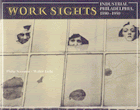

|  |
Work SightsIndustrial Philadelphia, 1890-1950Philip Scranton and Walter Lichtcloth EAN: 978-0-87722-341-2 (ISBN: 0-87722-341-6) |
Philadelphia Book Clinic Certificate of Award, 1987
History
Philadelphia Region
Labor Studies and Work
© 2015 Temple University. All Rights Reserved. This page: http://www.temple.edu/tempress/titles/337_reg.html.